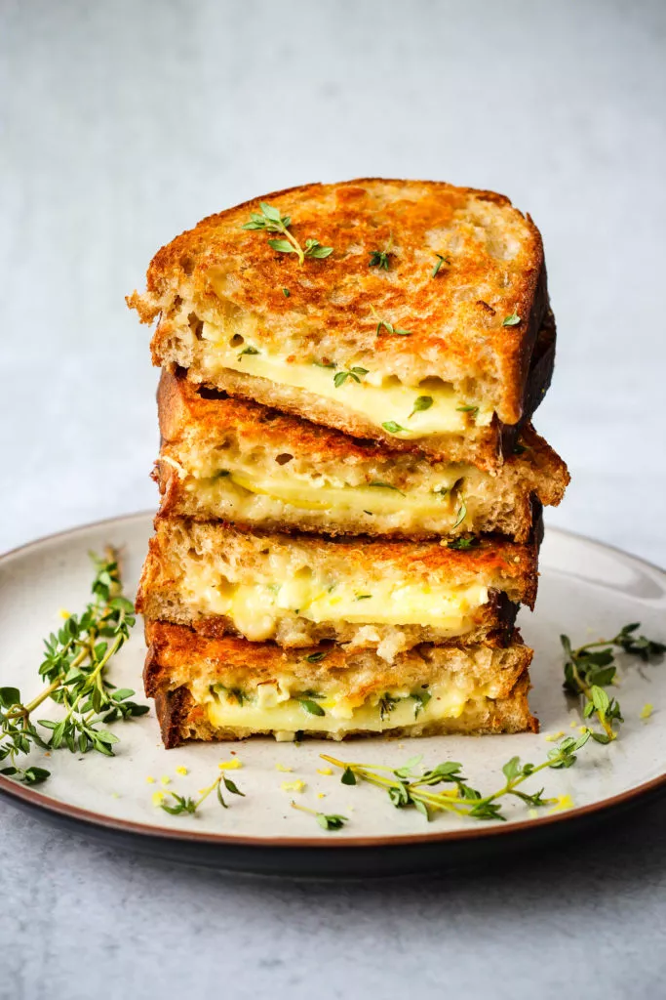

Grilled Cheese Sandwhich

Here we will dive into the process to make a dank ass grilled cheese sandwhich.
Who doesn't love a good grilled cheese sandwhich? With tomato soup? Your choice.
Ingredients
- 4 1/2 inch slices fresh sourdough bread
- Approx. 6 thin slices camembert cheese
- Approx. 6 thin slices sharp, aged cheddar
- 4 tsp fresh thyme
- 1 lemon, zested
- 1/2 an apple
- Fresh ground pepper, to taste
Steps
- Cut sourdough bread into four 1/2-inch slices.
- Top two slices of sourdough with sliced camembert cheese. Next, sprinkle the thyme, lemon zest, and ground
pepper over the camembert slices.
- Cut apple into thin slices and arrange them over the camembert.
- On the other two slices of sourdough, add the slices of cheddar cheese. Carefully close the sandwich,
placing the apple sides over the cheddar sides, and press together with your hands.
- Heat a large non-stick skillet over medium heat and spray with avocado oil spray (or other cooking oil, as
desired).
- Place the CHEDDAR side of the sandwiches onto the skillet. Cook for several minutes, pressing down with
spatula occasionally, until cheese begins to melt and the underside of the bread is golden brown.
- Spray the top sides of the sandwiches, and carefully flip with a spatula. Cook on this side for another few
minutes until the underside is golden brown.
- Feel free to flip sandwiches a couple more times to ensure even cooking. Once the cheese has melted, remove
from the pan and place onto a cutting board.
- Carefully slice the sandwiches in half with a serrated knife, and serve immediately!